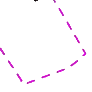

Legenda
| Limita teritoriului administrativ | |

|
Limita intravilanului propus |
| Limita UTR | |
| Limita subzona UTR | |

|
Limita zonei centrale |
| Servitute de utilitate publica | |

|
Reconfigurare spatiu public urban |

|
Posibile locatii pentru parcari publice subterane sau supraterane |
| Pod/pasaj propus | |
|  | Delimiatri ale zonelor construibile. Realinieri ale fronturilor strazilor |
| Zona construita protejata | |

|
Cladire monument istoric clasata in lista monumentelor istorice republicata in anul 2010 |

|
Cladire echivalenta ca valoare monumentelor istorice ce ar putea fi clasata ca monument istoric |

|
Cladire cu valoare artistica ambientala |
| Limita incintei romane |

|
Zona arheologica protejata |

|
Zona naturala protejata de interes conservativ (habitat) - existenta |

|
Zona naturala protejata de interes conservativ - propusa |

|
Zona cu risc mediu-mare de alunecari de teren |

|
Zona cu risc mare-foarte mare de alunecari de teren |
| Pista existenta 7-25 (2100m) Aeroportul Cluj Napoca | |
| Pista extinsa 7-25 (3420m) Aeroportul Cluj Napoca |
| Zona de protectie sanitara a surselor de apa, cimitire, unitatilor cu risc tehnologic | |
| Zona de siguranta a infrastructurii feroviare si rutiere | |
| Zona de siguranta a magistralelor de gaz metan | |
| Zona de siguranta a liniilor de inalta tensiune | |
| Zona de siguranta a magistralelor de alimentare cu apa | |
| Zona de siguranta M.A.P.N. Interdictie totala de construire | |

|
Zona de servitute aeronautica civila |
| Zona de protectie a mijloacelor de navigatie aeriana si meteorologice | |
| Mijloace de navigatie aeriana si meteorologice |